vgames <- read.csv("data/vgames_study.csv")31 Visualizing averages, spread, and conditional means
This chapter is about the most common visualization task in psychology and the social-behavioral sciences: showing the average of a continuous variable, the spread around that average, and (often) how the average depends on another variable. The chapter has three messages.
First, the most common way researchers visualize a mean, the bar chart with error bars, is almost always a bad choice. We will see why, and we will see several alternatives that work much better.
Second, “the spread” is not one quantity. Standard deviation, standard error, and 95% confidence interval are three different things, each suited to a different question. Picking the wrong one is one of the most common mistakes in published figures.
Third, when the average depends on another variable, the visualization is no longer “the mean of Y” but something more interesting: “Y as a function of X.” This shift in framing changes the entire question the figure is answering, and it is worth thinking carefully about which comparison the figure is asking the reader to make.
We will use the vgames_study data throughout. Load it.
31.1 The problem with bar charts of means
The bar chart with error bars on a mean is the default figure in many psychology papers. It looks like this:
agg_summary <- vgames |>
group_by(condition) |>
summarize(
mean_aggression = mean(aggression),
sd_aggression = sd(aggression),
n = n(),
se = sd_aggression / sqrt(n),
.groups = "drop"
)
ggplot(agg_summary, aes(x = condition, y = mean_aggression)) +
geom_col(fill = "steelblue", width = 0.6) +
geom_errorbar(aes(ymin = mean_aggression - se,
ymax = mean_aggression + se),
width = 0.15) +
labs(x = "Condition", y = "Mean aggression") +
theme_minimal()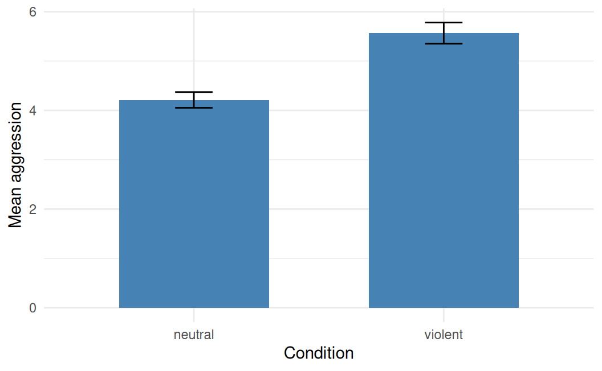
The plot is clear: the violent condition has a higher mean aggression score than the neutral condition. But it is also concealing almost everything else about the data. The reader cannot see:
- how many participants are in each group,
- how spread out the individual scores are,
- whether the distributions are symmetric or skewed,
- whether there are outliers,
- how much the two distributions overlap.
These are not minor details. They are most of what we want to know about the data. The bar plus error bar reduces the entire dataset of 120 participants to four numbers (two means and two standard errors), and throws everything else away.
Worse, the bar chart actively misleads in a subtle way. The vertical bar starts at zero and rises to the mean. The visual impression is that the data go from zero to the mean. But the data are aggression scores from 1 to 10; very few participants score near zero. The bar’s length is not a quantity that exists in the data; it is an artifact of the choice of plot.
The most direct demonstration of the problem is to show what completely different distributions look like when collapsed into the same bar plus error bar. The figure below shows three hypothetical datasets that all produce the same mean and standard error, but look completely different when the underlying distributions are exposed.
set.seed(42)
n_each <- 60
# Three datasets with the same mean (~5) and similar SE
df_normal <- data.frame(score = rnorm(n_each, mean = 5, sd = 1.2),
dataset = "Normal")
df_bimodal <- data.frame(score = c(rnorm(n_each / 2, mean = 3.5, sd = 0.4),
rnorm(n_each / 2, mean = 6.5, sd = 0.4)),
dataset = "Bimodal")
df_skewed <- data.frame(score = 10 - rexp(n_each, rate = 1/2) +
rnorm(n_each, 0, 0.1),
dataset = "Skewed")
df_skewed$score <- df_skewed$score - mean(df_skewed$score) + 5
all_three <- rbind(df_normal, df_bimodal, df_skewed)
all_three$dataset <- factor(all_three$dataset,
levels = c("Normal", "Bimodal", "Skewed"))
summary_three <- all_three |>
group_by(dataset) |>
summarize(m = mean(score), se = sd(score) / sqrt(n()), .groups = "drop")
# Bar version
bar_three <- ggplot(summary_three, aes(x = dataset, y = m)) +
geom_col(fill = "steelblue", width = 0.6) +
geom_errorbar(aes(ymin = m - se, ymax = m + se), width = 0.15) +
labs(x = NULL, y = "Mean score",
title = "Bar plot view (the misleading one)") +
coord_cartesian(ylim = c(0, 8)) +
theme_minimal(base_size = 10)
# Jitter version
jitter_three <- ggplot(all_three, aes(x = dataset, y = score)) +
geom_jitter(width = 0.15, alpha = 0.5, color = "steelblue") +
stat_summary(fun = mean, geom = "point", size = 3, color = "firebrick") +
labs(x = NULL, y = "Score",
title = "Individual data view (the honest one)") +
coord_cartesian(ylim = c(0, 8)) +
theme_minimal(base_size = 10)
if (requireNamespace("patchwork", quietly = TRUE)) {
patchwork::wrap_plots(bar_three, jitter_three, ncol = 2)
} else {
gridExtra::grid.arrange(bar_three, jitter_three, ncol = 2)
}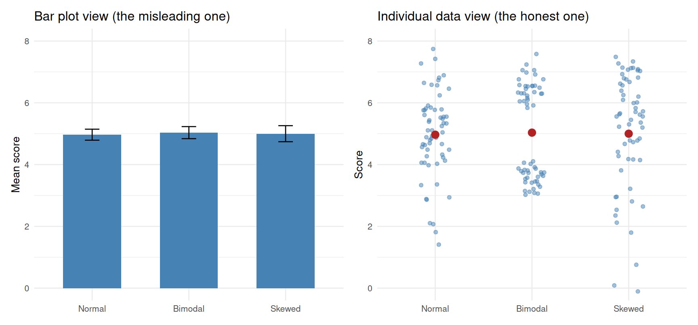
The three bar plots look almost identical. The three jittered-point plots reveal that the underlying data are completely different: one is roughly normally distributed, one is bimodal (two clusters with nothing in the middle), and one is skewed. Anyone reading only the bar chart would draw the same conclusion about all three datasets, even though they are telling very different stories.
The general principle is show your data when you can. If the dataset is small or moderate (typical psychology experiments are under a few hundred participants), it costs almost nothing to show every individual point, and it conveys vastly more information than any summary plot.
31.2 Alternatives that show the distribution
Several alternatives to the bar plot show the distribution of the data rather than hiding it. We work through the main ones in order of how much information they convey.
Jittered points. The simplest and often best option. Plot every individual observation as a point, with a small horizontal jitter to keep overlapping points visible.
ggplot(vgames, aes(x = condition, y = aggression)) +
geom_jitter(width = 0.15, alpha = 0.5, color = "steelblue") +
labs(x = "Condition", y = "Aggression") +
theme_minimal()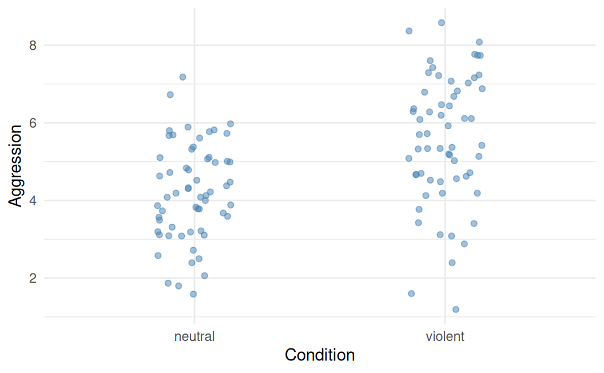
Every participant is visible. The reader can see the sample size, the spread, the location of the central mass, and any outliers. There are no hidden summaries.
To make the mean visible, layer it on top with stat_summary():
ggplot(vgames, aes(x = condition, y = aggression)) +
geom_jitter(width = 0.15, alpha = 0.5, color = "steelblue") +
stat_summary(fun = mean, geom = "point",
color = "firebrick", size = 3) +
labs(x = "Condition", y = "Aggression") +
theme_minimal()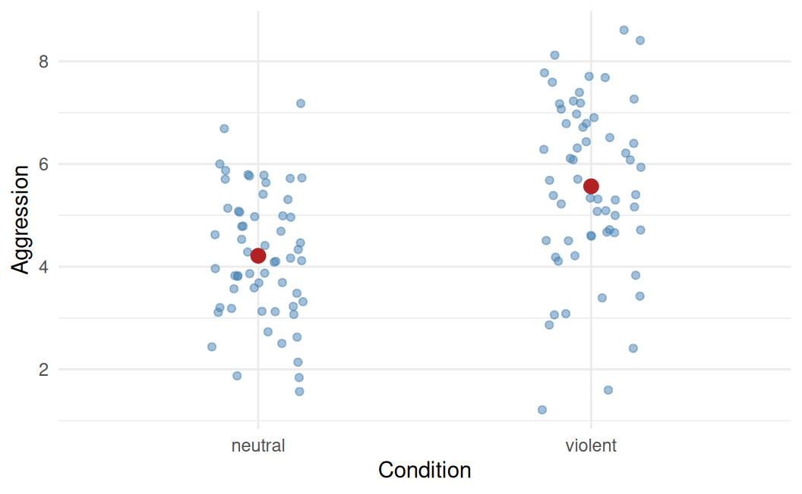
The dark red points are the means, sitting on top of the cloud of individual observations. This figure shows everything the bar chart showed (the comparison of means) plus everything the bar chart hid (the underlying data).
Boxplots. A more compact summary that shows the median, the middle 50% of the data, the typical range, and outliers all at once.
ggplot(vgames, aes(x = condition, y = aggression)) +
geom_boxplot(fill = "lightblue", width = 0.5) +
labs(x = "Condition", y = "Aggression") +
theme_minimal()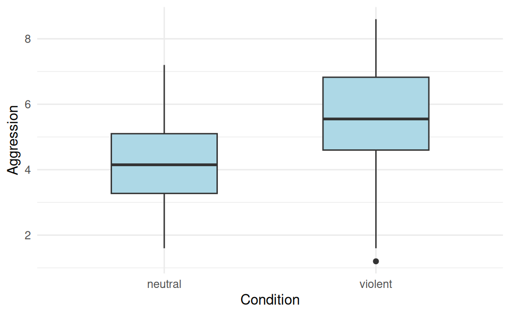
Boxplots are useful when the dataset is large enough that individual points would overlap into mush. They show the basic shape (symmetric vs skewed), the spread (the box height), and any outliers (the points beyond the whiskers). They hide the actual sample size, however; a boxplot of n = 10 looks the same as a boxplot of n = 1000.
Violin plots. A smoothed density estimate, drawn symmetrically. Violin plots reveal multi-modal distributions that boxplots would hide.
ggplot(vgames, aes(x = condition, y = aggression)) +
geom_violin(fill = "lightblue", color = "steelblue4") +
labs(x = "Condition", y = "Aggression") +
theme_minimal()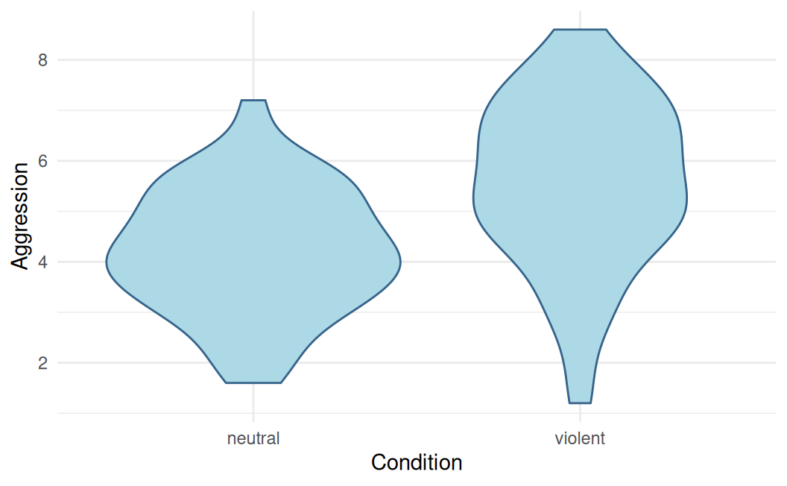
The width of the violin at any height shows how dense the data are at that value. A “lumpy” violin with two bulges would reveal a bimodal distribution that a boxplot or bar chart would smooth over.
Combined plots. The most informative figures combine multiple geoms. A common pattern is violin (for the shape), boxplot (for the central summary), and jittered points (for the individual data):
ggplot(vgames, aes(x = condition, y = aggression)) +
geom_violin(fill = "lightblue", color = NA, alpha = 0.5) +
geom_boxplot(width = 0.15, fill = "white", outlier.shape = NA) +
geom_jitter(width = 0.08, alpha = 0.35,
color = "steelblue4", size = 0.9) +
labs(x = "Condition", y = "Aggression") +
theme_minimal()The violin shows the smoothed distribution, the narrow boxplot inside shows the median and quartiles, and the jittered points show every observation. The figure does the work of three figures at once. Order matters: violins are drawn first (in the back), then the boxplot inside, then the points on top.
For most psychology applications, the combined plot or the jitter-with-mean plot is a strict improvement over the bar plot. The only situation in which the bar plot is preferred is when displaying counts (number of observations in each category), which we cover in Chapter 32.
31.3 Showing the spread: SE, SD, CI
“The spread” is not one quantity. The three most common candidates each measure something different, and the choice between them depends on what question your figure is asking.
Standard deviation (SD). The average distance between an individual observation and the mean. SD describes the variability of the data. A larger SD means more variable individuals. SD is in the same units as the data (e.g., aggression-scale points). It does not depend on sample size; if you collect more participants from the same population, the SD stays roughly the same.
Standard error (SE). The standard deviation of the sampling distribution of the mean (Chapter 21). It describes the precision of the mean as an estimate. A smaller SE means a more precise estimate. SE is computed as SD divided by the square root of n, so it shrinks as the sample size grows. The same dataset collected at n = 30 has the same SD as at n = 300, but the SE at n = 300 is about 3.16 times smaller. SE answers a question about how well we know the mean, not about how variable the individuals are.
95% confidence interval (CI). A symmetric interval around the mean, of approximately ±1.96 × SE for large samples. The CI is interpreted as a long-run capture procedure (Chapter 22): 95% of intervals constructed this way will contain the true population mean. The CI is the most directly interpretable of the three for inferential purposes; if it excludes a hypothesized value (often zero), the two-sided test against that value rejects at α = .05.
The figure below shows the difference visually. Each panel shows the same vgames_study data, but with error bars representing SD, SE, or 95% CI respectively.
three_bars <- vgames |>
group_by(condition) |>
summarize(
m = mean(aggression),
sd = sd(aggression),
n = n(),
se = sd / sqrt(n),
ci = qt(0.975, df = n - 1) * se,
.groups = "drop"
)
# Helper function to make one panel
make_panel <- function(low_var, high_var, title) {
ggplot(three_bars,
aes(x = condition, y = m,
ymin = m - .data[[low_var]],
ymax = m + .data[[high_var]])) +
geom_point(color = "firebrick", size = 3) +
geom_errorbar(width = 0.15, color = "firebrick") +
coord_cartesian(ylim = c(0, 9)) +
labs(x = NULL, y = "Aggression", title = title) +
theme_minimal(base_size = 10)
}
p_sd <- make_panel("sd", "sd", "Error bars = ±1 SD\n(spread of data)")
p_se <- make_panel("se", "se", "Error bars = ±1 SE\n(precision of mean)")
p_ci <- make_panel("ci", "ci", "Error bars = ±95% CI\n(inferential interval)")
if (requireNamespace("patchwork", quietly = TRUE)) {
patchwork::wrap_plots(p_sd, p_se, p_ci, ncol = 3)
} else {
gridExtra::grid.arrange(p_sd, p_se, p_ci, ncol = 3)
}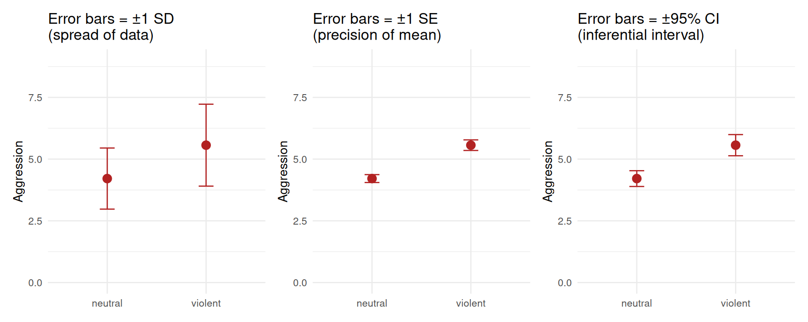
The bars in the SD panel are much longer than in the SE panel, because SD does not shrink with sample size while SE does. The CI is roughly 2 × SE, so the CI panel is between the SE and the SD panel in width.
A few recommendations follow from this. Use SD when your point is about the variability of the individuals (for example, when discussing the substantive interpretation of effect sizes like Cohen’s d). Use SE when your point is about the precision of the mean estimate (rarely useful on its own; usually superseded by the CI). Use 95% CI when your point is about inference (the standard choice for most published figures showing group means). And whatever you choose, label it explicitly. A figure with error bars and no caption saying which kind of error bars they are is uninterpretable.
For an even more interpretable variant, plot the difference between conditions with its CI on a floating axis, as we did in Chapter 27 (section 27.10). The difference and its CI is what frequentist inference is really about; showing it directly removes the need for the reader to mentally subtract two means and combine their SEs.
31.4 Easy customization
The plots above are clean but generic. A few small changes make them publication-ready.
Reorder the categories. R defaults to alphabetical order, which is rarely the order you want for a figure. The forcats::fct_relevel() function changes the order:
vgames$condition_ordered <- forcats::fct_relevel(vgames$condition,
"neutral", "violent")
ggplot(vgames, aes(x = condition_ordered, y = aggression)) +
geom_jitter(width = 0.15, alpha = 0.5, color = "steelblue") +
stat_summary(fun = mean, geom = "point",
color = "firebrick", size = 3) +
labs(x = "Condition", y = "Aggression") +
theme_minimal()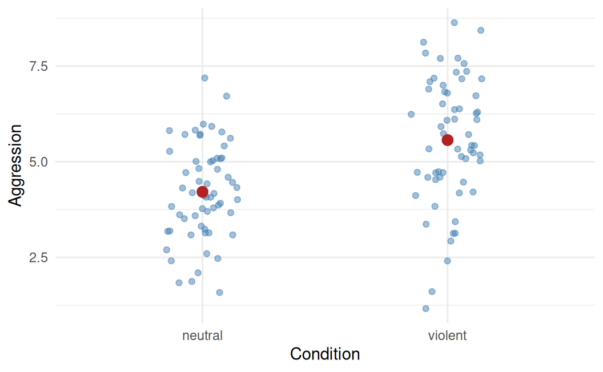
Now the neutral condition is on the left and the violent condition on the right, which matches the substantive “control, then treatment” ordering most readers expect.
Choose colors. The defaults are functional but not always good for accessibility or print. Use scale_color_manual() for points and lines, scale_fill_manual() for filled shapes:
ggplot(vgames, aes(x = condition_ordered, y = aggression,
color = condition_ordered)) +
geom_jitter(width = 0.15, alpha = 0.6) +
stat_summary(fun = mean, geom = "point", size = 3) +
scale_color_manual(values = c("neutral" = "#377eb8",
"violent" = "#e41a1c"),
guide = "none") +
labs(x = "Condition", y = "Aggression") +
theme_minimal()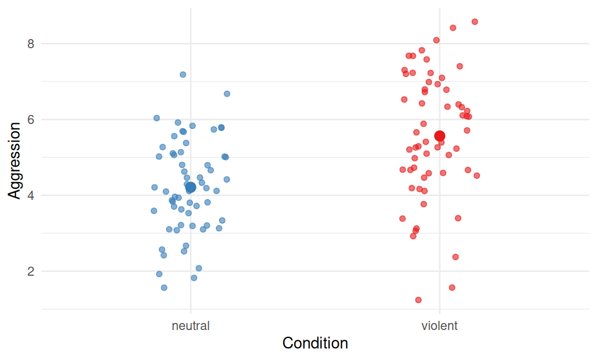
The hex codes are from the ColorBrewer palette, which is widely used because the colors are designed to be distinguishable in print and by readers with most forms of color vision deficiency.
Add an annotation. A reference line, a label, or a small piece of text makes the figure self-explanatory.
ggplot(vgames, aes(x = condition_ordered, y = aggression)) +
geom_jitter(width = 0.15, alpha = 0.5, color = "steelblue") +
stat_summary(fun = mean, geom = "point",
color = "firebrick", size = 3) +
geom_hline(yintercept = mean(vgames$aggression),
linetype = "dashed", color = "grey50") +
annotate("text", x = 0.6, y = mean(vgames$aggression) + 0.3,
label = "Grand mean", hjust = 0, size = 3.2,
color = "grey40") +
labs(x = "Condition", y = "Aggression") +
theme_minimal()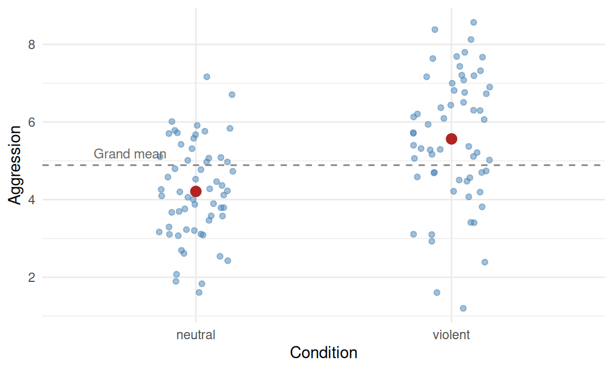
The dashed grey line is the grand mean across both conditions; it gives the reader a reference point to see how each condition’s mean sits relative to the overall average. Annotations like this are usually quick to add and significantly improve the figure’s standalone interpretability.
31.5 Conditional means: lines and regressions
So far the figures have shown the mean of aggression as a function of condition, a categorical variable. Often we want to show the mean of one continuous variable as a function of another continuous variable. The figure then becomes a scatterplot with a fitted line on top.
ggplot(vgames, aes(x = trait_hostility, y = aggression)) +
geom_point(alpha = 0.5, color = "steelblue") +
geom_smooth(method = "lm", se = TRUE,
color = "firebrick", formula = y ~ x) +
labs(x = "Trait hostility (1-7)",
y = "Aggression (1-10)") +
theme_minimal()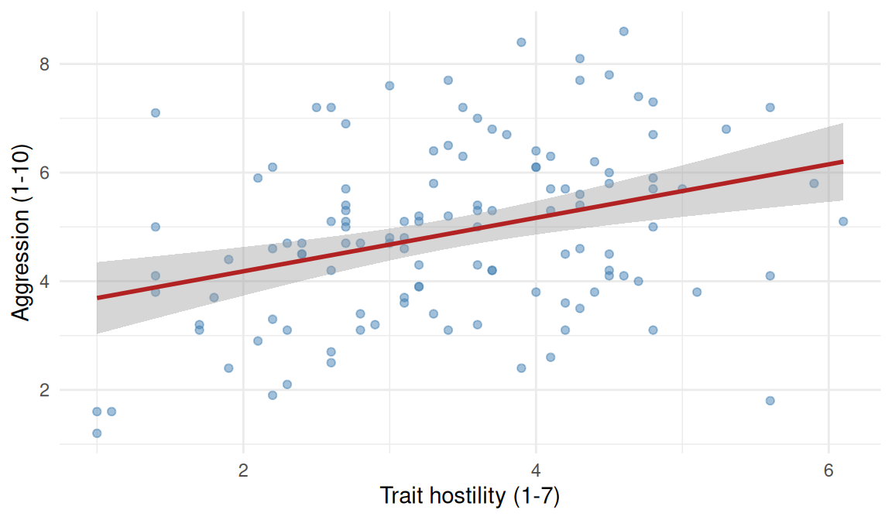
The line is the predicted value of aggression at each level of trait hostility, from a linear regression. The shaded band around the line is the 95% confidence interval on the predicted line (computed automatically by geom_smooth()). At any value of trait hostility, the shaded band tells you the range of plausible values for the mean aggression at that hostility level, not for individual scores.
When there are multiple groups, you can fit one line per group by mapping a color aesthetic:
ggplot(vgames, aes(x = trait_hostility, y = aggression,
color = condition_ordered)) +
geom_point(alpha = 0.5) +
geom_smooth(method = "lm", se = TRUE, formula = y ~ x) +
scale_color_manual(values = c("neutral" = "#377eb8",
"violent" = "#e41a1c"),
name = "Condition") +
labs(x = "Trait hostility (1-7)",
y = "Aggression (1-10)") +
theme_minimal()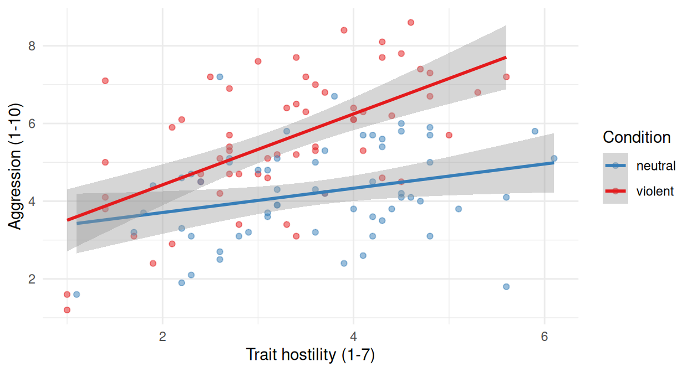
Now each condition gets its own regression line and its own confidence band. The figure shows two things at once: the marginal mean of aggression by condition (the height of each line at any given hostility value) and the relationship between hostility and aggression within each condition (the slope of each line). This is the visual fingerprint of a moderation effect (Chapter 18): the slope of the relationship depends on the value of another predictor.
If the relationship is non-linear, switch method = "lm" to method = "loess" for a smoother that bends with the data:
ggplot(vgames, aes(x = trait_hostility, y = aggression)) +
geom_point(alpha = 0.5, color = "steelblue") +
geom_smooth(method = "loess", se = TRUE,
color = "firebrick",
formula = y ~ x, span = 0.75) +
labs(x = "Trait hostility (1-7)",
y = "Aggression (1-10)") +
theme_minimal()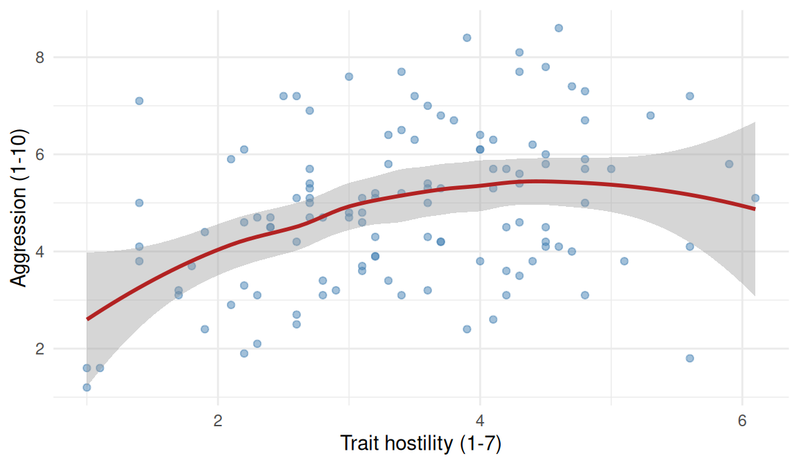
The loess smoother is non-parametric: it does not assume a specific functional form. For exploratory plots, where you do not yet know what shape the relationship has, loess is often a better first look than the linear smoother.
31.6 What is being compared, and to what reference?
Every figure showing means or conditional means is implicitly answering a question. The shape of the question determines what the figure should look like.
Three families of questions are particularly common in psychology, and they each call for a slightly different figure.
“What is the average of Y, and how variable is it?” The simplest question. Answer it with one of the distribution-showing plots from section 31.3 (jitter, boxplot, violin, or a combination), with the mean visible.
“How does the average of Y compare between groups?” The standard between-groups question. Use a plot that shows the distribution of Y in each group side by side (the combined plot is excellent for this). Add the mean and an appropriate measure of inferential precision (the 95% CI on each group’s mean, not the SD or SE). A better alternative, when feasible, is to plot the difference between groups with its CI on a floating axis, because the difference and its CI are what an inferential test of the comparison directly delivers (Chapter 27, section 27.10). The visual question becomes “does the CI on the difference exclude zero?”, which is exactly what a frequentist test answers.
“How does the average of Y depend on X?” The conditional-mean question. Use a scatterplot with a fitted line. The visual question becomes “what does the slope look like, and how precisely is it estimated?” (the shaded band around the line). If there are multiple groups, plotting one line per group lets the reader see whether the slope differs across groups (the moderation question of Chapter 18).
A fourth question is worth flagging because it is often answered with the wrong figure.
“Is the effect of interest different from zero?” Many researchers answer this question by plotting two group means side by side and asking the reader to mentally subtract them. This works, but it is indirect: the reader has to combine the two CIs in their head (and most readers, including most researchers, will get the eyeball calculation wrong; recall Chapter 27 section 27.6 on overlapping CIs). The direct answer is a single quantity (the difference) plotted with its own CI, with zero marked. If the CI does not contain zero, the effect is non-zero at the chosen confidence level; if it does, the data are consistent with no effect.
The general lesson is to think about which question your figure is asking the reader to answer, and then choose a plot that puts the answer directly in front of them. The bar-plus-error-bar template asks the reader to do extra mental work and hides most of the data. The combined plot, the difference-with-CI plot, and the scatter-with-fitted-line are all visualizations that put the answer to a specific substantive question directly on the page, with the data still showing.
31.7 Check your understanding
1. Why are bar charts of means commonly considered a poor choice for visualizing group differences?
2. What is the difference between the standard deviation, the standard error, and the 95% confidence interval when shown as error bars on a group mean?
3. What does a jittered-points plot of group means show, and how can the central tendency be added?
4. When using geom_smooth(method = "lm") with a color aesthetic mapped to a grouping variable, what does the resulting figure show?
5. What is the advantage of plotting the difference between two group means with its 95% confidence interval, rather than plotting the two means with their individual CIs?
6. What does the loess smoother fitted by geom_smooth(method = "loess") do?
7. Which of the following best describes the principle that should guide the choice of visualization for a comparison?
31.8 References
Cumming, G. (2014). The new statistics: Why and how. Psychological Science, 25(1), 7-29. https://doi.org/10.1177/0956797613504966
Weissgerber, T. L., Milic, N. M., Winham, S. J., & Garovic, V. D. (2015). Beyond bar and line graphs: Time for a new data presentation paradigm. PLOS Biology, 13(4), e1002128. https://doi.org/10.1371/journal.pbio.1002128